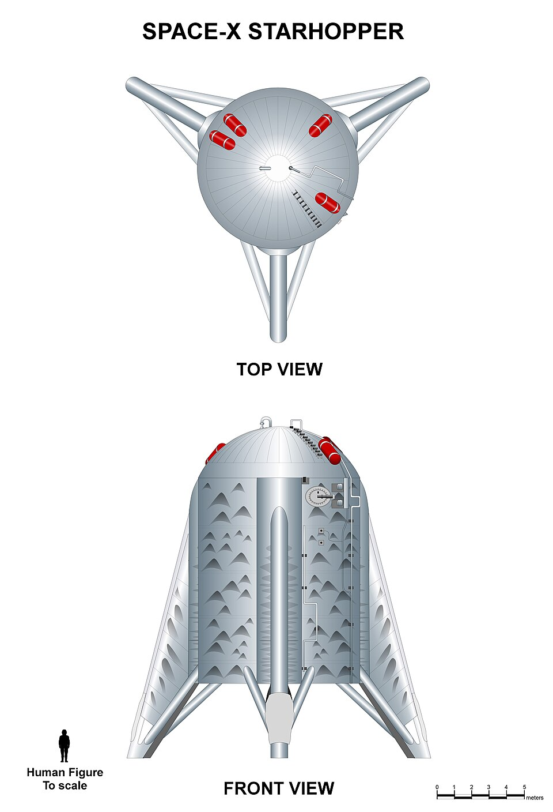

Dimostrato
Prove a terra e impiego nei voli del sistema Starship.
Motori · Scheda tecnica 13
Il motore a metano del sistema Starship. La combustione stadiata a flusso completo modifica il percorso dei propellenti e rende molto impegnativa l’integrazione.
Stato al 10 ottobre 2026: In sviluppo
Leggi i dati Controlla le fonti
Riferimento: documenti citati a fondo pagina, letti con le rispettive date. Stato editoriale al 10 ottobre 2026.
I due rami alimentano precombustori e turbine; i flussi arrivano poi alla camera principale. La gestione di temperature, pressioni, materiali e avviamento richiede un progetto coordinato, non soltanto un ugello più efficiente.
Raptor 1, 2 e 3 descrivono passaggi del progetto e dell’integrazione. Le fotografie del 2016 documentano lo sviluppo iniziale; le prestazioni annunciate per una nuova versione richiedono prove nella configurazione installata.
Spinta e impulso specifico variano con ugello, ambiente e regime. La riduzione di tubazioni esterne non dimostra da sola minore manutenzione o affidabilità superiore.
Prove a terra e impiego nei voli del sistema Starship.
Semplificazione e prestazioni delle generazioni successive dichiarate dal costruttore.
Durata, manutenzione e margini del motore nel ciclo di riuso previsto.

Consultazione editoriale: 10 ottobre 2026. Le date dei singoli documenti sono distinte dalla data della scheda.